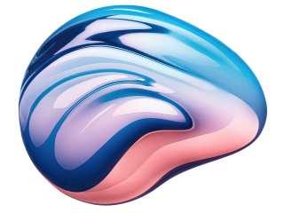

Портфолио

Сайт ИБ
Сайт ИБ
Сайт ИБ
Сайт ИБ
12.02.2026
Проблема не в отсутствии идей. Проблема в страхе. Страхе сказать что-то не то. Страхе выделиться. В итоге компании предпочитают не говорить ничего – и дизайн становится немым
Я помогаю любым проектам найти свой голос. Не крикливый, а уверенный. Не агрессивный, а защищающий. Не сложный, а технологичный Как это работает? Я не спрашиваю: «Какой дизайн вам нравится». Я спрашиваю: «Как ваша аудитория должна чувствовать себя при взаимодействии с вашим продуктом? В безопасности? Под защитой? В руках экспертов?»
Затем перевожу эти чувства в визуальный язык. Чёткие структуры, которые показывают системность. Широкие насыщенные элементы, которые демонстрируют активную защиту. Цвета, которые вызывают правильные ассоциации Я нацеливаюсь на дизайн, который говорит. Который отличает. Который убеждает. Который превращает посетителя в клиента. Потому что клиент чувствует: здесь свои; здесь знают что делают


Сайт ИБ

Друг мой эльф! Яшке б свёз птиц южных чащ! Эта флегматичная верблюдица жуёт у подъезда засыхающий горький шиповник.
Вот и я о том жеСъешь ещё этих мягких французских булок, да выпей же чаю. Любя, съешь щипцы где-то тут, – вздохнёт мэр, – кайф жгуч. Шеф взъярён тчк щипцы с эхом гудбай Жюль. Эй, жлоб! Где туз? Прячь юных съёмщиц в шкаф. Экс-граф? Плюш изъят
Бьём чуждый цен хвощ! Эх, чужак! Общий съём цен шляп (юфть) — вдрызг! Эх, чужд кайф, сплющь объём вши, грызя цент. Чушь: гид вёз кэб цапф, юный жмот съел хрящ. В чащах юга жил бы цитрус? Да, но фальшивый экземпляр!
1 2 3 4 5Друг мой эльф! Яшке б свёз птиц южных чащ! Эта флегматичная верблюдица жуёт у подъезда засыхающий горький шиповник.
Друг мой эльф! Яшке б свёз птиц южных чащ! Эта флегматичная верблюдица жуёт у подъезда засыхающий горький шиповник.
Вот и я о том жеСъешь ещё этих мягких французских булок, да выпей же чаю. Любя, съешь щипцы где-то тут, – вздохнёт мэр, – кайф жгуч. Шеф взъярён тчк щипцы с эхом гудбай Жюль. Эй, жлоб! Где туз? Прячь юных съёмщиц в шкаф. Экс-граф? Плюш изъят
Бьём чуждый цен хвощ! Эх, чужак! Общий съём цен шляп (юфть) — вдрызг! Эх, чужд кайф, сплющь объём вши, грызя цент. Чушь: гид вёз кэб цапф, юный жмот съел хрящ. В чащах юга жил бы цитрус? Да, но фальшивый экземпляр!
1 2 3 4 5Друг мой эльф! Яшке б свёз птиц южных чащ! Эта флегматичная верблюдица жуёт у подъезда засыхающий горький шиповник.